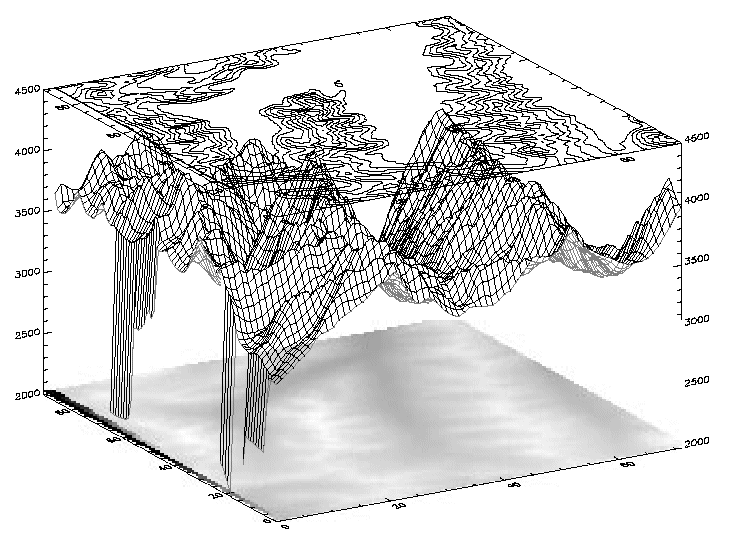

The SHOW3 procedure combines an image, a surface plot of the image data, and a contour plot of the images data in a single tri-level display.
This routine is written in the IDL language. Its source code can be found in the file show3.pro in the lib subdirectory of the IDL distribution.
SHOW3, Image [, X , Y ] [, / INTERP ] [, E_CONTOUR = structure ] [, E_SURFACE = structure ] [, SSCALE = scale ]
The two-dimensional array to display.
A vector containing the X values of each column of Image . If the X argument is omitted, columns have values 0, 1, ..., n columns-1.
A vector containing the Y values of each row of Image . If the Y argument is omitted, rows have values 0, 1, ..., n rows-1.
Set this keyword to use bilinear interpolation on the pixel display. This technique is slightly slower, but for small images, it makes a better display.
Set this keyword equal to an anonymous structure containing additional keyword parameters that are passed to the CONTOUR procedure. Tag names in the structure should be valid keyword arguments to CONTOUR, and the values associated with each tag should be valid keyword values.
Set this keyword equal to an anonymous structure containing additional keyword parameters that are passed to the SURFACE procedure. Tag names in the structure should be valid keyword arguments to SURFACE, and the values associated with each tag should be valid keyword values.
Reduction scale for surface. The default is 1. If this keyword is set to a value other than 1, the array size is reduced by this factor for the surface display. That is, the number of points used to draw the wire-mesh surface is reduced. If the array dimensions are not an integral multiple of SSCALE, the image is reduced to the next smaller multiple.
; Create a dataset:
A = BESELJ(SHIFT(DIST(30,20), 15, 10)/2.,0)
; Show it with default display:
SHOW3, A
; Specify X axis proportional to square root of values:
SHOW3, A, SQRT(FINDGEN(30))
; Label CONTOUR lines with double size characters, and include
; downhill tick marks:
SHOW3, A, E_CONTOUR={C_CHARSIZE:2, DOWN:1}
; Draw a surface with a skirt and scale Z axis from -2 to 2:
SHOW3, A, E_SURFACE={SKIRT:-1, ZRANGE:[-2,2]}
Images are combined with three-dimensional graphics, as shown in the figure below, using the transformation techniques described above.
|
 |
The rectangular image must be transformed so that it fits underneath the mesh drawn by SURFACE. The general approach is as follows:
Use SURFACE Procedure to establish the general scaling and geometrical transformation. Draw no data, as the graphics made by SURFACE will be over-written by the transformed image.
For each of the four corners of the image, translate the data coordinate, which is simply the subscript of the corner, into a device coordinate. The data coordinates of the four corners of an ( m , n ) image are (0, 0), ( m –1, 0), (0, n –1), and ( m –1, n –1). Call this data coordinate system ( x , y ). Using a procedure or function similar to CVT_TO_2D convert to device coordinates, which in this discussion are called ( U , V ).
The image is transformed from the original xy coordinates to a new image in UV coordinates using the POLY_2D function. POLY_2D accepts an input image and the coefficients of a polynomial in UV giving the xy coordinates in the original image. The equations for x and y are below.
X = S 0,0 + S 1,0 U +S 1,0 V +S 1,1 UV
Y = T 0,0 + T 1,0 U + T 1,0 V + T 1,1 UV
We solve for the four unknown S coefficients using the four equations relating the x corner coordinates to their U coordinates. The T coefficients are similarly found using the y and V coordinates. This can be done using matrix operators and inversion or more simply, with the procedure POLY_WARP.
The new image is a rectangle that encloses the quadrilateral described by the UV coordinates. Its size is specified in the formula below:
(MAX( U ) – MIN( U ) +2, MAX( V ) – MIN( V ) +1)
POLY_2D is called to form the new image which is displayed at device coordinate (MIN( U ), MIN( V )).
SURFACE Procedure is called once again to display the mesh surface over the image.
Finally, CONTOUR Procedure is called with ZVALUE set to 1.0, placing the contour above both the image and the surface.
The SHOW3 procedure performs these operations. It should be examined for details of how images and graphics can be combined.
The following IDL commands were used to create the previous image:
; Restore variables:
@cntour01
; Create an array of levels for CONTOUR:
levs = (FINDGEN(10)*100)+3500
; Use SHOW3. Note the use of keywords E_SURFACE ; and E_CONTOUR to pass values to the SURFACE and ; CONTOUR routines used within SHOW3.
SHOW3, elev, E_SURFACE={min:2000}, E_CONTOUR={levels:levs}
|
Original |
Introduced |